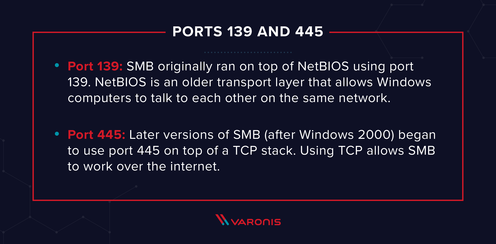

- As the name of the box suggest (i.e. Blue) so we get an idea that the exploitation is with the SMB port (i.e. 139)
- And the exploitation maybe a Eternal blue MS17-010.
- So will be more focused to exploit that using Metasploit and manual way to exploit it.
